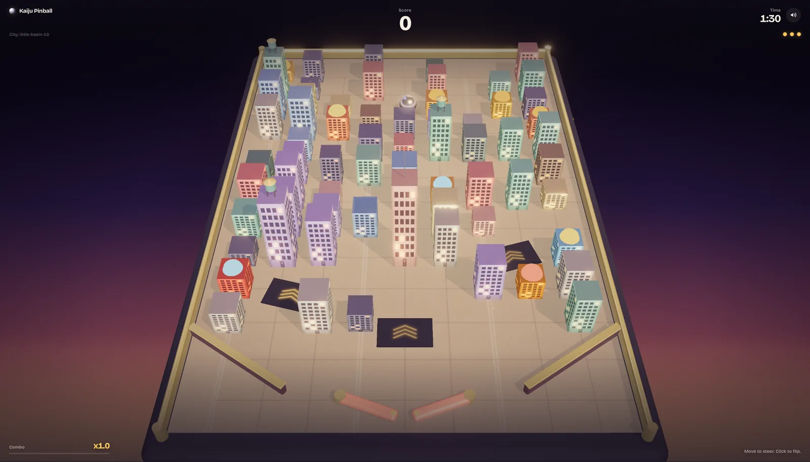
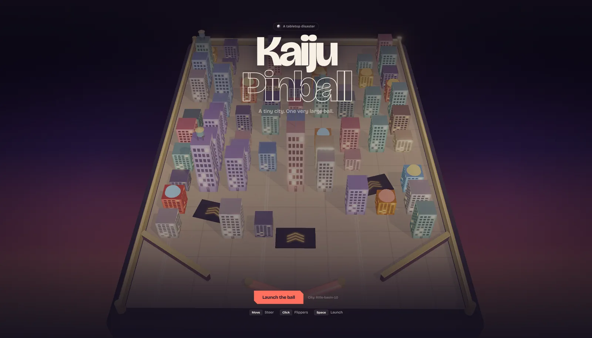
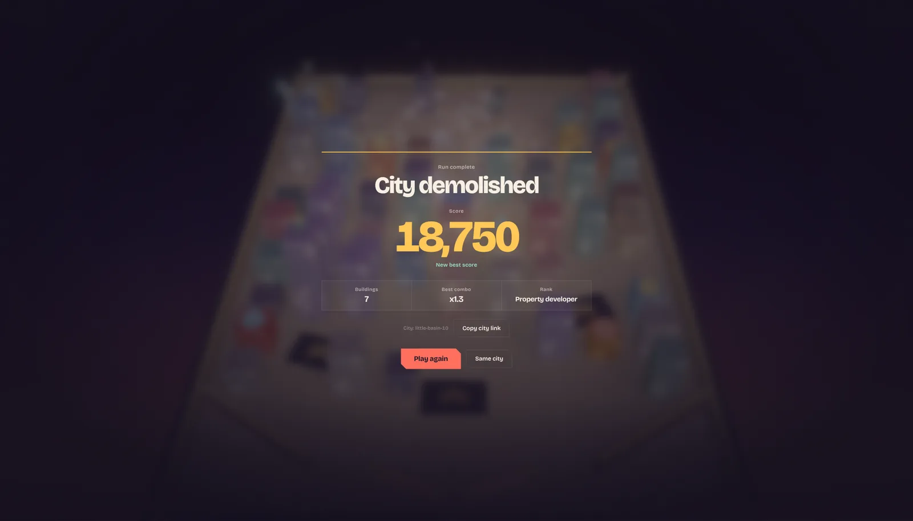

three.js · Case study
A city built
to be broken.
Kaiju Pinball is a browser toy where a chrome ball tears through a seeded miniature city that doubles as a pinball table. Ninety seconds, three balls, no external models, textures, or audio, and a custom solver at 120 Hz. The hard part was not making destruction look real. It was making it read instantly and cost almost nothing.
- Role
- Design, code, audio
- Stack
- Vite, TypeScript, three.js
- Format
- 90 seconds, 3 balls
- Status
- v0.1, November 2026

The problem
A physics demo is not yet a game.
Most browser 3D demos stop at the scene. You orbit a model, click a button, and the technical achievement is the whole experience. Kaiju Pinball starts from the opposite end: a loop that should survive a stranger's first thirty seconds.
Pinball supplies the shape. A launch lane, a drain, two flippers, three balls, ninety seconds. The city supplies the targets and the theme. Put them together and the table stops being a backdrop. Buildings are bumpers, streets are lanes, and every block is both scenery and score.
The constraint was readability. If a player cannot tell what will break, what will fight back, and what just happened, the chaos is noise. The build keeps one ball, three block types, a four-color accent set, and a small set of feedback layers. Everything else is either generated or cut.
From tech demo to table
The difference is not more effects. It is a loop that gives every effect a job.
| Criterion | A 3D demo | Kaiju Pinball |
|---|---|---|
| Goal | Orbit the scene and try the one interaction. | Keep a ball alive for ninety seconds and beat a score. |
| Targets | Whatever the model happens to contain. | A seeded city where every block has health and a role. |
| Feedback | One effect when you click. | Shards, sparks, dust, rings, shake, sound, and a score popup. |
| Failure | Nothing to lose. | The drain costs a ball, and the report gives the run a rank. |
| Replay | A different camera angle. | A new seed, a better combo, one more run. |
What it is
A pinball table wearing a city.
The playfield is 23.6 units wide and 34 units deep. The city sits on that surface in a 9 by 13 grid, with the launch lane at the top and three boost pads cut into the streets. The ball is 1.32 units across, about one building wide.
A run starts with a seed. The same seed builds the same city, down to the palette, the window pattern, and the roof details. Type a new seed and the skyline changes. Share the URL and a friend gets the same table. The daily run is just a seed made from the local calendar date.
Three block types do the teaching. Fragile blocks break in one hit and feed chains. Solid blocks take three hits and slow the route down. Bumper blocks take two hits and throw the ball back with a shockwave. The flippers sit at the plinth edge, with inlane guides on both sides and a five-second save on each fresh ball.
- Table
- 23.6 wide, 34 deep
- City
- 9 x 13 grid at 2.45 spacing
- Run
- 90 seconds, 3 balls
- Save
- 5-second save window
One ball, one city, one more run.
The loop is deliberately small. There is no inventory, no campaign, and no upgrade tree. A run ends with a score, a rank, a seed, and two buttons. The interesting part is what happens between the launch and the drain.
The run
The loop in six beats.
A representative run, from the first screen to the report. The times are approximate because the ball decides, but the order is the design.
-
0:00
The city is the first thing you see.
- On screen
- The start screen sits directly over the attract city, with the title, launch, daily run, current seed, and up to five recent cities.
- Why it lands
- The table is visible before the first click. The first decision is already about a specific city.
-
0:03
The ball enters from the top.
- On screen
- A chrome ball drops into the launch lane and gravity pulls it toward the city. The camera eases to follow.
- Why it lands
- No tutorial. The lane gives the player a beat to read the table before the ball reaches the first block.
-
0:10
The first hit teaches the rules.
- On screen
- Fragile blocks break in one hit, solid blocks take three, and bumper caps throw the ball back with a shockwave.
- Why it lands
- The materials do the teaching. Pastel means breakable. Muted means stubborn. Glowing means it hits back.
-
0:25
The combo wants motion.
- On screen
- Each damaging hit raises the multiplier by 0.25 and resets the 2.6-second window. Chain reactions add points and a callout.
- Why it lands
- The scoreboard turns destruction into a route. Standing still is the only wrong move.
-
1:10
The save buys one mistake.
- On screen
- The first drain in the first five seconds of a ball shows "Ball saved". Later drains cost a ball and relaunch after about a second.
- Why it lands
- The save protects the opening, when the player is still reading the table. It does not protect the whole run.
-
1:30
The wreckage gets a report.
- On screen
- Time slows, the camera orbits the city, and the end screen shows score, buildings destroyed, best combo, rank, seed, replay, and same city.
- Why it lands
- The run ends with a number and a name, then two ways to start again. The seed is the bridge between runs.


How it works
Five decisions hold the table together.
No physics engine. No model files. No audio files. No hand-placed building. The whole game is a seed, a fixed step, and a handful of recycled pools.
-
The city is the table.
The generator lays out a 9 by 13 grid at 2.45 units, then reserves the launch lane and three pads before filling the rest at 72 percent density. A block is a target, a street is a lane, and the plinth gives the whole thing a physical edge. The city is not decoration around a pinball table. It is the table.
-
One string builds the city.
A seed is hashed with FNV-1a into a 32-bit integer, then mulberry32 turns that integer into a stream of decisions: is there a building here, how tall is it, is it fragile or solid or a bumper, which pastel does it get? Same seed, same city. The seed lives in the URL because it is the city compressed into a name.
-
The ball runs at 120 Hz.
Gravity pulls the ball down the table, the pointer or keys add a steering nudge, and the position integrates. At the 40 unit speed cap, a 60 Hz step would move the ball 0.67 units, twice the 0.35 unit wall. A fixed 120 Hz step moves it 0.33 units, so no swept collision is needed. At most eight steps run per frame, so a slow frame cannot spiral.
-
Destruction is scheduled, not simulated.
Buildings have one, two, or three health. Impact damage is impact speed minus one, times 0.38, with a floor. When a block dies, up to eight neighbors within three units are queued for 1.05 damage after 40 to 140 milliseconds, and chains can nest two levels deep. The building disappears. Shards, sparks, dust, and rings do the mourning.
-
Everything is generated.
The skyline is one instanced mesh with per-seed facade textures. The effects are fixed pools: 420 shards, 900 sparks, 320 dust motes, 20 rings. The ball has a procedural chrome environment, and every sound is synthesized with the Web Audio API. Nothing is loaded from a model, texture, or audio file.
The fixed step
let steps = 0;
accumulator += dt;
while (accumulator >= 1 / 120 && steps < 8) {
stepBall(1 / 120);
accumulator -= 1 / 120;
steps += 1;
}Sphere against AABB
const closestX = Math.max(min.x, Math.min(position.x, max.x));
const closestY = Math.max(min.y, Math.min(position.y, max.y));
const closestZ = Math.max(min.z, Math.min(position.z, max.z));
if (distanceSq > radius * radius) return false;
// Push the ball out, then reflect the normal velocity.
velocity.addScaledVector(normal, -(1 + restitution) * normalVelocity);The collision test is the closest point on the box. If the distance is under the radius, the ball is pushed out along the normal and the normal velocity is reflected. Buildings use 0.48 restitution, bumpers 0.92. The guides flip the normal toward the table center, which is why the ball cannot settle in an outlane.
The reasoning behind the custom solver and the seeded generator is in ADR 0001 and ADR 0002.
Performance
Three draw calls for a city.
The scene has a fixed budget. The city is one instanced mesh. The effects are allocated once and recycled. The pixel ratio stops at 1.75. Nothing in the loop creates a mesh per impact.
- Run
- 90 sone timer, three balls
- Physics
- 120 Hzfixed substeps
- City
- 9 x 13grid cells
- Skyline
- ~3draw calls
- Effects
- 1,660fixed pool slots
- Pixel ratio
- 1.75xhard cap
Every building shares one box geometry and a material array for sides, roof, and bottom. The facade texture is 128 by 256, generated per seed, with 4 by 8 windows and 27 percent lit. Destroyed blocks are hidden by zeroing their instance matrix, not by changing the instance count. The bumper caps are a second instanced mesh. The table, rim, and plinth are built once. That is about three draw calls for the city before lamps, roof details, and the effects pass.
The effects are four fixed pools. A destroyed block spawns 10 shards, 26 sparks, 14 dust motes, and one ring. A glancing hit spawns 14 sparks and 8 dust. A bumper spawns 34 sparks and two rings. The pools cycle a cursor; when a slot is reused, the old particle is already dead. The frame never waits on the garbage collector for a new impact.
Post runs a render pass, UnrealBloom at 0.35 strength, an output pass, and one vignette and grain shader. ACES tone mapping sits at 0.9 exposure. Shadows are one 2048 directional map. The main risk is bloom on integrated graphics, and the next performance pass should measure it.
What this is not. These are constants and budgets from the build, not a published benchmark. The target is 60 fps on a mid-range laptop. A frame trace on integrated graphics is still to come, and the limitations below say so.
Design and feel
Make the chaos readable.
A chrome ball hitting a city could look like a disaster. The art direction keeps it a toy: warm sunset light, pastel blocks, one large chrome object, and feedback that arrives in layers.
config.ts. The seed picks the color, adds a
small HSL shift, and keeps the block type readable at a glance.
Diorama first.
The table sits on a rounded plinth with a brass rim and corner posts. The camera is a 38 degree tabletop view with a gentle sway in attract mode. The city reads as an object you could pick up, which makes the destruction feel playful instead of grim.
One chrome object.
The ball is the only metal in the scene. It uses a 512 by 256 procedural equirectangular environment with dark caps, a bright horizon, and a warm sun. A halo sprite ignores depth so the ball can be found behind a tower, and a contact shadow keeps it on the table.
Feedback in layers.
Every hit gets sparks and dust. Destruction adds shards and a ground ring. A bumper adds 34 sparks, two rings, and a camera punch. Trauma decays at 1.7 per second, and the shake is squared, so small hits stay small and big hits read big.
Sound with no files.
Impacts combine filtered noise with a sine thump. Bumpers get a triangle ping. Combos climb a note table. A low wind bed runs underneath, and the audio context only unlocks after a gesture, so the page stays quiet until the player asks for sound.
Accessibility and input
A DOM HUD over a canvas game.
Kaiju Pinball is a visual game. The honest accessibility story is not that the canvas is accessible. It is that the interface around the canvas is real DOM, and the gaps are named.
What reaches
- Keyboard parity. A and D or the arrow keys steer. Z or left Shift fires the left flipper. M, slash, or right Shift fires the right. Space launches.
- Pointer parity. The pointer's horizontal position steers with a dead zone. A click on the left or right half fires that flipper. On touch, a drag steers and a tap flips.
- Text status. Score, timer, combo, seed, callouts, and the end report are DOM text. The callout region is a polite live region, and the mute button updates its label when the state changes.
- Focus is respected. Space does not hijack a focused button, so launch, daily run, recent city chips, mute, replay, and same city all work from the keyboard.
-
Interface motion has a fallback. The DOM layer honors
prefers-reduced-motionfor its animations and transitions.
What does not
-
The canvas is
aria-hidden. The city, ball, flippers, and targets are not in the accessibility tree. There is no screen-reader or audio-only way to play. - There is no gamepad support, key remapping, or reduced-motion mode for camera shake.
- Block type is communicated by color first. Height and behavior vary, but there is no non-visual target cue.
- Touch works, but the mobile layout has not had a real-device gesture and safe-area pass.
The realistic goal is a reachable interface and an honest boundary, not a claim that a fast visual game is fully accessible. The next pass should start with a reduced-motion toggle and a clearer non-color cue for block type.
Limitations
What this does not claim.
A case study is more useful when it says where the edges are. These are the current ones.
-
Arcade physics.
Buildings vanish instead of collapsing. Shards are cosmetic, and chain reactions are scheduled. There is no rigid-body solver and no structural simulation.
-
One theme.
The seed changes layout, palette, and window pattern, not the art direction. Harbor, rooftop garden, and industrial themes are still ideas.
-
No frame trace.
The performance numbers are constants and budgets from the build, not a measured benchmark on a known device.
-
Local records.
Best score and recent cities live in
localStorageon one browser. There is no leaderboard, account, or replay file. -
Visual play.
The canvas is hidden from assistive technology. The HUD is reachable. The playfield is not.
-
Mobile, not polished.
Drag and tap work. Pinch, haptics, and safe-area behavior on a real phone are still to be checked.
What is next
The next run.
The core loop is built. The remaining work is reach, evidence, and a little more variety.
-
More city themes
A harbor, a rooftop garden, an industrial district. Each theme needs a palette, facade rules, and a screenshot.
-
A subtle ball trail
A short trail and a stronger occlusion locator would make the ball easier to follow behind towers.
-
A real mobile pass
Pinch, haptics, safe areas, and a gesture check on an actual phone, not a resized desktop window.
-
A frame trace
Measure frame pacing and bloom cost on integrated graphics, then publish the numbers beside the budgets.
-
A first-run beat
One short prompt that teaches launch, steering, and the flippers without adding a tutorial screen.
-
A shareable run card
Score, rank, and seed as an image, so a run can leave the browser.
One more run
A tiny city.
One very large ball.
Ninety seconds. Three balls. A new skyline every time.